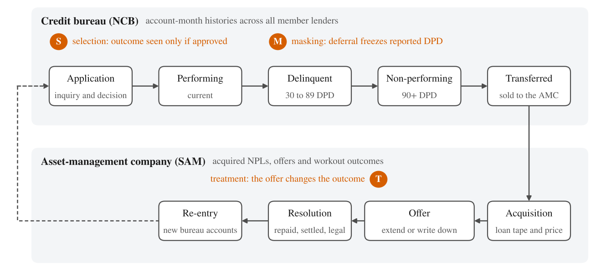
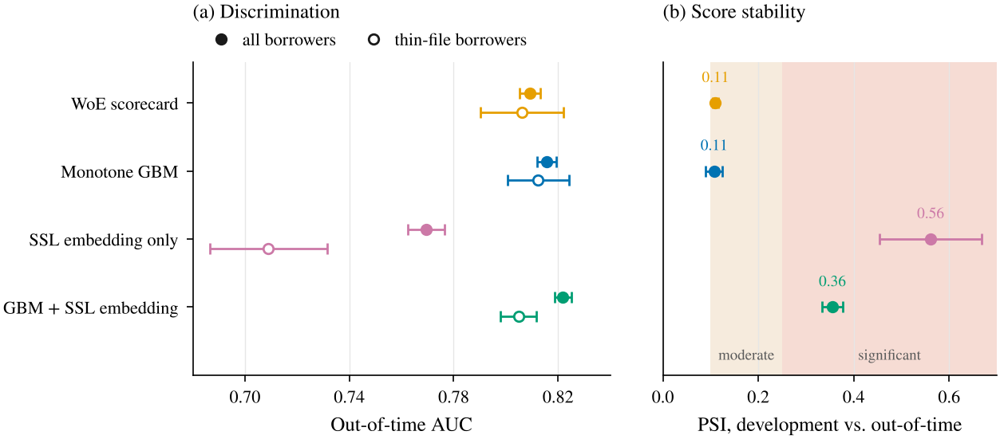
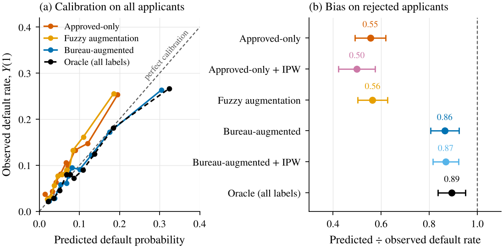
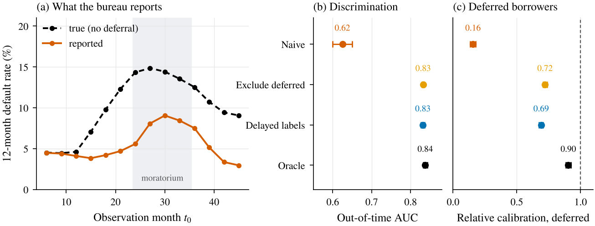
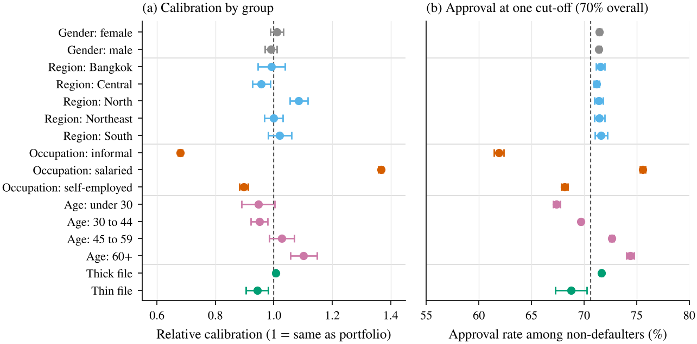
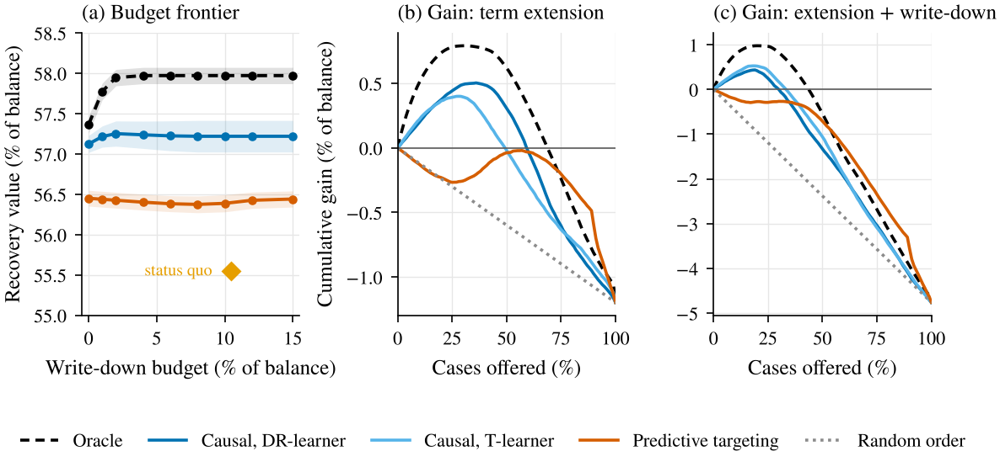
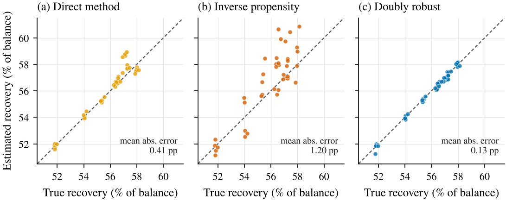

1 Introduction
Credit scores are trained on outcomes produced by the system they help to run. A lender records repayment only for the applicants it approves. A moratorium suspends the reporting of arrears precisely when distress peaks. A collector chooses which distressed borrowers receive a longer term or a write-down, and that choice shapes whether they repay. Each mechanism turns a label into a policy-dependent quantity, and a model that ignores this learns the policy along with the risk.
These mechanisms are first-order where household debt is high and policy intervenes often. Household debt in Thailand stood close to 90% of GDP in the early 2020s according to Bank of Thailand statistics, and its growth and delinquency have been documented with credit-bureau records (Chantarat et al. 2020). The country used broad payment deferrals during the COVID-19 pandemic, has operated a Debt Clinic for unsecured debt through a state-owned AMC since 2017, and has tightened responsible-lending rules that require earlier restructuring. Every one of these policies changes which outcomes are recorded and what they mean.
Two institutions sit at opposite ends of the debt lifecycle (Figure 1). The National Credit Bureau (NCB) observes account-month repayment histories across its member lenders, from application to non-performance. Sukhumvit Asset Management (SAM) observes what happens after many of those loans are sold: the offers made, the repayments that follow and legal recovery. Linked, the two data sets would show the full lifecycle at national scale, including whether a resolved borrower returns to formal credit. They also make the three label mechanisms visible: selection at approval (S), masking during deferral (M) and treatment in the workout (T).

This paper makes four contributions.
A lifecycle framework. We formalise selection, masking and treatment on a common notation and show how linkage changes identification for each. For selection, repayment observed at other lenders shrinks the identification region for rejected applicants from the unit interval to the share of rejects with no other account, 10% in our simulator.
Estimators that use the linkage. Bureau-augmented reject inference, masking-aware labels, and a cross-fitted DR-learner for the effects of restructuring offers, combined with write-down-budgeted policy learning and doubly robust off-policy evaluation.
Simulators with ground truth. Two calibrated simulators, a multi-lender bureau with soft information, a macro shock and a moratorium, and an NPL workout portfolio with four offers, record counterfactual outcomes so every method can be scored against the truth. All code accompanies the paper.
Findings and an agenda. The estimators correct most of the bias that standard practice leaves in place (Section 6). We map each open question to a source of quasi-experimental variation in the linked data and to a privacy-preserving linkage design (Section 7).
1.0.0.1 Scope
No NCB or SAM data were used. Every number in this paper is a property of the simulators, whose parameters were chosen to make the mechanisms visible at plausible magnitudes. The numbers are not estimates for Thailand. The code separates the simulators from the estimators so that loaders for real data can replace the former once access and governance are in place.
Section 2 describes the institutional setting and Section 3 related work. Section 4 formalises the mechanisms and the estimators, Section 5 the simulators, and Section 6 reports results. Section 7 sets out the research agenda, and Section 8 discusses limitations.
2 Institutional setting
2.0.0.1 Credit bureau
NCB is Thailand’s national credit bureau and operates under the Credit Information Business Act B.E. 2545 (2002). Member institutions report account-level data monthly, including product, limit, balance, days past due (DPD) and account status, and the bureau records inquiries made by members. Access requires the data subject’s consent and is limited to purposes such as credit evaluation, and the Act limits how long negative information may be disclosed. Two features matter here. The bureau sees accounts at all member lenders, not only at the lender that made a decision. Its records are also shaped by member and policy decisions, for example through status codes for deferred accounts.
2.0.0.2 Asset-management company
SAM is a state-owned AMC under the Financial Institutions Development Fund. It acquires non-performing loans (NPLs) and foreclosed assets from financial institutions and resolves them through restructuring, settlement or legal action. Since 2017 it has run a Debt Clinic with the Bank of Thailand that consolidates eligible borrowers’ unsecured debts into a long-term, low-rate repayment plan. Programme terms and eligibility rules have changed over time, which matters for identification (Section 7).
2.0.0.3 Policy interventions
Relevant policies include payment deferrals during 2020–2021, responsible-lending rules that require lenders to offer restructuring before loans become non-performing, and targeted relief programmes with eligibility thresholds. The simulators encode only the mechanisms these policies share, not the terms of any programme, so nothing below depends on programme details.
3 Related work
3.0.0.1 Credit scoring
Large benchmarks find that gradient-boosted trees and ensembles lead on tabular credit data (Lessmann et al. 2015) and that deep networks rarely beat them (Gunnarsson et al. 2021), in line with general tabular evidence (Grinsztajn et al. 2022; Gorishniy et al. 2021). Event-sequence models trained on raw histories, often with self-supervision, are the main challenger (Babaev et al. 2019, 2022), and tabular foundation models are a newer one (Hollmann et al. 2025). Practice still relies on monotone, explainable scorecards (Siddiqi 2017; Thomas et al. 2017; Rudin 2019); we evaluate both families, with profit-relevant metrics in the spirit of Verbraken et al. (2014).
3.0.0.2 Selection and reject inference
Reject inference is not identified without assumptions (Hand and Henley 1993, 1997), and empirical gains from classic methods are small (Banasik et al. 2003; Crook and Banasik 2004). The selective-labels literature evaluates predictions when decisions censor outcomes, using decision-maker leniency and contraction (Lakkaraju et al. 2017; Kleinberg et al. 2018); examiner leniency has also been used to measure bias in consumer lending (Dobbie et al. 2021). Score cut-offs provide discontinuities in credit access (Keys et al. 2010; Agarwal et al. 2018). We add a data-driven route: a bureau observes rejected applicants’ repayment elsewhere, which tightens bounds of the Manski (1990) type.
3.0.0.3 Policy-shaped labels, deletion and fairness
Label noise (Natarajan et al. 2013), invariance across environments (Arjovsky et al. 2019) and performative prediction (Perdomo et al. 2020) give general tools for labels that depend on the environment or on the model. Forbearance during COVID-19 changed reported delinquency at scale (Cherry et al. 2021). The removal of negative information from credit reports changes access to credit (Musto 2004; Dobbie et al. 2020; Herkenhoff et al. 2021), with equilibrium effects on other borrowers (Liberman et al. 2018). Machine-learning scores can widen disparities (Fuster et al. 2022), partly through noisier scores for thin-file borrowers (Blattner and Nelson 2021), and calibration cannot coexist with equal error rates when base rates differ (Kleinberg et al. 2017; Chouldechova 2017); see Kozodoi et al. (2022) for credit scoring and Ustun et al. (2019) for recourse.
3.0.0.4 Debt relief and resolution
Evidence on what helps distressed borrowers is mixed. Payment reductions dominated principal reductions for US mortgages (Ganong and Noel 2020), while delayed write-downs helped distressed credit-card borrowers and immediate payment reductions did not (Dobbie and Song 2020); see also Dobbie and Song (2015; Agarwal et al. 2017; Piskorski et al. 2010). Self-cure and redefault risk explain why lenders renegotiate less than one might expect (Adelino et al. 2013). Collections have been optimised with dynamic models (Chehrazi et al. 2019) and constrained reinforcement learning (Abe et al. 2010). We use the causal machine-learning toolkit (Chernozhukov et al. 2018; Wager and Athey 2018; Athey et al. 2019; Künzel et al. 2019; Nie and Wager 2021; Kennedy 2023), policy learning (Kitagawa and Tetenov 2018; Athey and Wager 2021) and off-policy evaluation (Dudík et al. 2011).
4 Framework
Borrowers are indexed by and months by . denotes bureau attributes computed from reported data up to the end of month . A loan is in default when it reaches 90+ DPD. For a horizon , indicates a reported default in .
4.1 Selection at approval
An applicant to lender is approved () or rejected (). Let be the default indicator if a loan is granted. The lender observes only when , but the target for an application score is for all applicants: (1) When lenders also use information that the bureau does not record (soft information) and predicts , then . An approved-only model is then biased however flexible it is, and reweighting on cannot repair it.
The bureau sees more than the lender. Let indicate that a rejected applicant holds any account, existing or newly opened elsewhere, during the outcome window, so that repayment is observed. For rejected applicants, (2) Only the last factor is unobserved. Bounding it by yields an identification region of width for the rejects’ default rate, instead of width one. In our simulator that width averages 10%. Point identification requires one more assumption, that observable and unobservable rejects with the same default at the same rate, which motivates reweighting observable rejects by . Repayment on other accounts is a proxy for repayment on the new loan. The two coincide in our simulator by construction, and in real data the gap can be measured on approved applicants who hold other accounts.
We compare five estimators: approved-only (AO); AO reweighted by ; classic fuzzy augmentation, which adds each reject twice with labels 1 and 0 weighted by the AO prediction (Siddiqi 2017); bureau-augmented (BA), which adds rejects with ; and BA reweighted for unobservable rejects.
4.2 Masking by deferral
During a moratorium, a deferred account () keeps its reported delinquency state frozen. Let be the default indicator in a counterfactual world without deferral. The reported label is roughly , and deferral is more likely for distressed borrowers: (3) Masking is therefore not at random and has three consequences: default rates are understated, risk rankings flatten, and a deferral flag used as a feature can take the wrong sign. We compare three remedies with an oracle trained on , which real data never provide:
Exclude windows that overlap a deferral. This is valid only if deferral is ignorable given , and it removes every flagged training row.
Delayed labels: extend the window of a deferred borrower to , where is the last month of deferral and months.
Naive: use reported labels as they are.
Deferral can also change outcomes, so differs from what happens after exit. Delayed labels target outcomes under the policy actually experienced, which is what a model used after the programme ends needs.
4.3 Treatment in the workout
Workout case has balance and covariates from the AMC file and the bureau. An offer is standard collection, a term extension at a concessional rate, a 30% write-down, or both. The recovery value is the present value of collections at the AMC’s cost of funds divided by . The effect of offer is . Logged offers were chosen by officers with propensities . We assume unconfoundedness given and overlap (). With cross-fitted outcome models and propensities , the DR-learner (Kennedy 2023) regresses on the pseudo-outcome (4) A policy maps covariates to offers. Write-downs are limited by a budget in baht: (5) where for offers with a write-down and otherwise. Algorithm 1 solves the linear relaxation greedily, which is near-optimal when no single case is large relative to . Policy values are estimated off-policy with the direct method (DM), inverse propensity scoring (IPS) and the doubly robust (DR) estimator (Dudík et al. 2011), all weighted by balance: (6)
Algorithm 1. Write-down-budgeted offer allocation
Require estimated effects for (), balances , budget
for each case do
// best offer without a write-down
// extra gain from writing down
spent
for in decreasing order of do
if and spent then
;spent spent
5 Simulators and protocol
5.1 Bureau simulator
The bureau simulator generates 50,000 borrowers over a 60-month panel after a 12-month burn-in. Borrower has latent ability , whose mean differs by occupation and age, soft information that lenders see but the bureau never records, and an idiosyncratic shock whose volatility is highest for informal workers. A macro shock hits in months 24–35, with for six months afterwards. In each month the borrower misses a payment with probability (7) where is the logistic function, is occupation-specific sensitivity to the shock and is revolving utilisation. Delinquency moves along (current, 30, 60 and 90+ DPD) with each missed payment. A borrower at 30 or 60 DPD who pays cures with probability , and 90+ DPD is absorbing.
Borrowers apply for credit with probability at one of six lenders, chosen by market share (30% for lender 0, 14% for a lenient lender). Each lender approves its target share of the month’s applicants (50% at lender 0, 45–60% at the others, 85% at the lenient lender), ranking them by a risk index of reported attributes plus and noise. Lender 0 leans heavily on soft information (), the others less () and the lenient lender hardly at all (). At month 24, active borrowers enter a moratorium with probability , where is their standardised distress. Deferral freezes the reported state until month 35, and catch-up payments raise the logit in (7) by 0.7 for six months after exit. An observed and a counterfactual no-deferral world share all random draws, so the masking effect is measured exactly. The bureau computes 16 attributes from reported data (Appendix B). Table 1 lists the resulting moments.
Table 1. Simulator moments, averaged over five seeds.
| Simulator | Moment | Value |
|---|---|---|
| Bureau, no moratorium | 12-month default rate, scorable population, (window spans the shock) | 9.8% |
| 12-month default rate, (after the shock) | 3.1% | |
| Thin-file share of the scorable population | 10.7% | |
| Approval rate, lender 0 / lenient lender | 50% / 85% | |
| Default rate of approved / rejected applicants at lender 0, | 5.5% / 16.1% | |
| Rejected applicants with repayment observable at other lenders | 90% | |
| Bureau, with moratorium | 12-month default rate before the shock, | 4.5% |
| Borrowers ever deferred | 26.3% | |
| Training default rate, reported vs. no-deferral counterfactual | 4.5% vs. 10.9% | |
| Workouts | Logged offers: standard / extension / write-down / both | 48 / 28 / 15 / 9% |
| Write-downs under the logged policy, share of balance | 10.4% |
5.2 Workout simulator
The workout simulator generates 50,000 NPL cases, 30% of them secured by property. Each case has a balance, monthly income, a repayment capacity equal to an unobserved share of income, and willingness to pay . Offers set an instalment and a remaining debt (Appendix A). The plan is completed with probability (8) The first term captures liquidity: can the borrower afford the instalment? The second captures debt overhang: willingness collapses once the debt exceeds four years of capacity, so only a write-down helps (Ganong and Noel 2020; Dobbie and Song 2020). A completed plan yields the present value of its instalments at an 8% annual cost of funds. A failed plan yields the instalments paid before redefault within three years, fewer when they are unaffordable, followed by legal recovery: after 30 months for secured cases and 5% after 24 months for unsecured ones. A secondary outcome is the probability of a new 90+ DPD at another lender within 24 months, , for borrowers with other accounts. Sixty officers with generosity chose logged offers through a multinomial logit on observables and their own generosity, with a 2% floor per offer. Twelve covariates are observed, including noisy proxies of income and of the share of income free for repayment. Truth is computed in expectation by quadrature; realised outcomes are drawn once per case.
5.3 Protocol
All results are means over five seeds with standard deviations across seeds. E1 and E4: models are developed on observation months (about 200 thousand borrower-months) and tested out of time on (about 136 thousand), with ; the development windows span the shock. E2: lender 0’s applications in months 6–47 (about 18.9 thousand per seed), split 50/50 by borrower and scored against every applicant’s . E3: development through the moratorium, , and test after it, . Workouts: a 50/50 split, outcome models per offer, a multinomial logistic propensity model and 2-fold cross-fitting.
The models are a gradient-boosted classifier with monotone constraints on 11 of the 16 attributes (scikit-learn HistGradientBoosting); a weight-of-evidence (WoE) scorecard with monotone binning and points scaled to 600 at odds of 50:1 with 20 points to double the odds; and, for E3, logistic regression, so that the coefficient on the deferral flag can be read. The self-supervised (SSL) encoder is a denoising autoencoder (96–16–96) trained on 60,000 unlabelled 24-month sequences of five channels with 25% of months masked, a CPU-scale stand-in for a bureau foundation model. Metrics are AUC, the KS statistic, the Brier score, the ratio of mean predicted to observed default (PD/observed), and the population stability index (PSI) between development and out-of-time scores.
6 Results
6.1 E1: model benchmark out of time

Table 2. E1: out-of-time performance (mean s.d. over five seeds).
| Model | AUC | AUC, thin file | KS | Brier | PSI | PD/observed |
|---|---|---|---|---|---|---|
| WoE scorecard | ||||||
| Monotone GBM | ||||||
| SSL embedding, linear probe | ||||||
| GBM + SSL embedding |
The monotone GBM reaches an out-of-time AUC of 0.816 against 0.809 for the scorecard (Table 2, Figure 2). Adding SSL embeddings raises AUC to 0.822 but not on thin files (0.805 against 0.812), and it more than triples score drift (PSI 0.36 against 0.11). Embeddings alone reach 0.769. The pattern matches the tabular evidence that representation learning adds little over well-engineered attributes (Gunnarsson et al. 2021; Grinsztajn et al. 2022), and it adds a cost the usual benchmarks omit: a representation learned across a regime shift moves when the regime ends.
Every model over-predicts default after the shock, by a factor of about 3.85 for the GBM, because development windows span the shock (9.5% default against 3.0% out of time). Rankings transfer but calibration does not, so recalibration and macro-aware term structures are part of the method rather than an afterthought.
6.2 E2: selective labels

Table 3. E2: reject inference at lender 0, scored against every applicant’s true outcome .
| AUC | Predicted / observed | Default rate at | |||
|---|---|---|---|---|---|
| 2-3(lr)4-5 Method | all applicants | approved only | all | rejected | 70% approval (%) |
| Approved-only (AO) | |||||
| AO + IPW on observables | |||||
| Fuzzy augmentation | |||||
| Bureau-augmented (BA) | |||||
| BA + IPW for unobserved rejects | |||||
| Oracle (all applicants, true ) | |||||
Lender 0 approves 50% of applicants; approved applicants default at 5.5% and rejected ones would have defaulted at 16.1%. The approved-only model under-predicts default among rejects by 45% (ratio 0.55, Table 3, Figure 3). Reweighting on observables makes this worse (0.50), because it up-weights approved applicants with poor bureau records, whom the lender approved precisely because their soft information was good. Fuzzy augmentation (0.56) inherits the AO model’s bias. Bureau-augmented labels raise the ratio to 0.86 (0.87 with reweighting), close to the oracle’s 0.89. AUC on all applicants rises from 0.693 to 0.713, equal to the oracle, and the default rate at a 70% approval rate falls from 7.1% to 6.6%.
Validation on approved applicants alone, the view a single lender has, cannot tell these methods apart: their AUCs on approved applicants span only 0.663–0.679. Reject inference therefore cannot be validated in-house. It needs outcomes for rejected applicants, which only a cross-lender view can supply.
6.3 E3: masking by a moratorium

Table 4. E3: training through a moratorium and testing after it. “n/e”: not estimable, because excluding deferred windows removes every flagged row.
| Training default | Coefficient on | Out-of-time | Relative calibration, | Out-of-time | |
| Label strategy | rate (%) | deferral flag | AUC | deferred borrowers | Brier |
| Naive: reported labels | 4.5 | ||||
| Exclude deferred windows | 6.5 | n/e | |||
| Delayed labels (+6 months after exit) | 8.9 | ||||
| Oracle: no-deferral counterfactual | 10.9 |
During the moratorium the bureau reports far less default than occurs in the counterfactual world (Figure 4a). Across development windows, the reported default rate is 4.5% against 10.9% without deferral. A model trained on reported labels learns deferral as a safety signal (coefficient 0.59, Table 4). After the programme ends, deferred borrowers default at 7.5% against 2.1% for the rest, and the naive model’s AUC collapses to 0.625 from about 0.83. It also assigns deferred borrowers 0.16 of their relative risk.
Excluding deferred windows restores AUC (0.832) but cannot learn anything about the flag and leaves deferred borrowers under-predicted (0.72). Delayed labels restore AUC (0.831), neutralise the flag (+0.01) and raise relative calibration to 0.69. The oracle, which no real data provide, reaches 0.838 and 0.90. The remaining gap exists because deferral itself changes outcomes, through catch-up stress and through survival, so the deferral should be modelled as a treatment, not only as a source of missing labels (Section 7).
6.4 E4: groups

Group calibration is stable across gender and regions (between 0.96 and 1.09 for regions) but not across occupations (Figure 5a). Relative to the portfolio, the model under-predicts informal workers (0.68) and over-predicts salaried ones (1.37), because the shock in the development period hit occupations unevenly and their relative risk changed after it. Yet non-defaulting informal workers are approved less often (61.9% against 75.6%, Figure 5b), because their base default rate is higher (5.6% against 2.0%). The two panels illustrate the impossibility result: with unequal base rates, calibration and equal opportunity cannot both hold (Kleinberg et al. 2017; Chouldechova 2017). Which criterion governs is a policy choice. Thin-file borrowers are close to calibrated (0.94) but approved less often when they repay (68.8% against 71.7%).
6.5 Causal debt resolution
Table 5. Accuracy of estimated offer effects against the simulator’s truth, in percentage points (pp) of balance.
| True effect vs. standard (pp) | RMSE of estimated effect (pp) | |||
|---|---|---|---|---|
| 2-3(lr)4-5 Offer | mean | s.d. across cases | T-learner | DR-learner |
| Term extension | 0.9 | 6.5 | ||
| Write-down | 8.8 | 12.7 | ||
| Extension + write-down | 11.1 | 16.6 | ||
6.5.0.1 Effects
On average every concession lowers recovery value, by 0.9, 8.8 and 11.1 pp for extension, write-down and both, but the effects vary widely across cases (s.d. 6.5–16.6 pp, Table 5). The DR-learner estimates them more accurately than the T-learner for extensions (RMSE 5.2 against 6.7 pp) and write-downs (7.3 against 7.7), but not for the combined offer (9.5 against 9.0), which officers chose in only 9% of cases; small propensities make its pseudo-outcomes noisy.
Table 6. Policies at the logged policy’s write-down budget, true values on the held-out half (mean s.d. of recovery over five seeds).
| Recovery value | Plan | New 90+ DPD at | Write-downs | |
| Policy | (% of balance) | completion (%) | other lenders (%) | (% of balance) |
| Status quo (logged offers) | 37.6 | 31.2 | 10.4 | |
| All standard | 31.3 | 38.2 | 0.0 | |
| All term extension | 44.7 | 23.7 | 0.0 | |
| Predictive targeting | 43.6 | 24.2 | 10.4 | |
| Causal targeting (T-learner) | 41.3 | 29.3 | 8.5 | |
| Causal targeting (DR-learner) | 42.2 | 29.3 | 4.4 | |
| Oracle | 44.3 | 29.0 | 2.9 |

6.5.0.2 Policies
The logged policy recovers 55.55% of balance, less than offering everyone the standard track (56.58%), because officers concede too often to borrowers who would self-cure and to borrowers beyond help (Table 6), the pattern Adelino et al. (2013) describe. Predictive targeting, which ranks cases by a collections score and helps the lowest scorers, reaches 56.40%. Causal targeting with the DR-learner reaches 57.22% while writing down 4.4% of balance instead of 10.4%, and the oracle reaches 57.97%. Causal targeting thus captures 69% of the attainable gain over the logged policy, against 35% for predictive targeting. Plan completion rises from 37.6% to 42.2%.
The bureau outcome shows a trade-off. New 90+ DPD at other lenders falls from 31.2% under the logged policy to 29.3% under causal targeting, but to 23.7% if every borrower gets an extension. Maximising recovery is not the same as minimising distress spilling over to other creditors, and a public AMC may want an objective that weights both.
6.5.0.3 Budgets and rankings
The oracle frontier rises from 57.36% at zero budget to 57.97% and is flat beyond a budget of 4% of balance (Figure 6a). Causal targeting gains much less from write-downs (57.12% to 57.25%), and predictive targeting stays between 56.37% and 56.45% at every budget. Most of the attainable gain comes from choosing correctly between the standard track and an extension. Write-downs pay only in a narrow overhang segment, where effect estimates are noisiest. The gain curves (Figure 6b, c) show why predictive targeting fails: offering extensions to the lowest scorers first loses money at the start, because many of them cannot repay on any terms.

6.5.0.4 Evaluation before deployment
Doubly robust off-policy evaluation tracks true policy values with a mean absolute error of 0.13 pp, against 0.41 for the direct method and 1.20 for IPS (Figure 7, Appendix D). The direct method overstates the value of the T-learner policy by +1.64 pp, because it judges a policy with the outcome model that designed it, while the doubly robust estimate stays within 0.01 pp. An AMC can therefore screen candidate policies on logged data before it commits to a field test.
7 A research agenda for the linked data
The simulators show what each estimator can recover when its assumptions hold. With real data, the assumptions must be earned. Table 7 maps each question to a source of variation that the linked data or the programmes themselves provide.
Table 7. Questions for the linked NCB–SAM data and sources of identifying variation.
| Question | Source of variation | Data needed | Estimator |
|---|---|---|---|
| Default of rejected applicants | Leniency of lenders and branches; approval quotas; score cut-offs | Inquiries and new accounts across lenders | Leniency IV, contraction, bounds (2) |
| Masking by deferral | Automatic versus opt-in phases; eligibility thresholds | Deferral status codes and post-exit histories | Delayed labels, censoring weights, RDD |
| Effects of workout offers | Rotation-based assignment of cases to officers; programme cut-offs (debt size, NPL date); randomised pilots | SAM offers and payments; bureau outcomes | Judge IV, RDD, DR-learner, field experiments |
| Return to formal credit | Expiry of negative information; timing of resolution | Bureau histories after resolution | RD in time, staggered DiD (Callaway and Sant’Anna 2021) |
| Prevention versus cure | Timing of restructuring relative to delinquency | Multi-state histories in both sources | Offline RL with conservative evaluation |
7.0.0.1 Selection
Lenders and branches differ in approval rates for comparable applicants. If applicants’ choice of lender is as good as random given their attributes, leniency identifies the effect of credit access and the default rate of marginal rejects (Dobbie et al. 2021; Kleinberg et al. 2018), and bureau-observed repayment narrows the bounds in (2).
7.0.0.2 Masking and deferral
Deferral programmes that began automatically and later required applications, or that used eligibility thresholds, separate selection into deferral from its effect. That supports both corrected labels and an estimate of whether deferral prevented default or postponed it (Cherry et al. 2021).
7.0.0.3 Workout offers
If cases are allocated to officers by rotation or workload, officers’ generosity is an instrument for concessions (Dobbie and Song 2015). Debt Clinic eligibility rules, such as cut-off dates for NPL status and limits on debt size, create discontinuities. A small randomised pilot in which every arm is at least as generous as current practice would validate the off-policy estimates, and conservative bandits (Kazerouni et al. 2017) can then improve offers online.
7.0.0.4 Return to formal credit
The statutory limit on how long negative information may be disclosed creates a discontinuity in time, comparable to bankruptcy-flag removal in the United States (Musto 2004; Dobbie et al. 2020). Any policy that deletes records for small resolved debts would create an experiment similar to Chile’s (Liberman et al. 2018).
7.0.0.5 Privacy-preserving linkage
Linking the two sources requires neither institution to release identities. National ID numbers, names and birth dates can be encoded with salted Bloom filters held by a trusted third party (Schnell et al. 2009). Models can be trained across the two institutions with vertical federated learning, with features held at the bureau and outcomes at the AMC (Cheng et al. 2021). Released statistics can carry differential-privacy guarantees (Dwork and Roth 2014). Each step needs a lawful purpose under the Credit Information Business Act and the Personal Data Protection Act B.E. 2562 (2019), a data-protection impact assessment and ethics review. Pilots that affect borrowers also need pre-registered analysis plans and stopping rules.
8 Limitations
Simulation results show what methods can recover under stated assumptions, not what the Thai credit market looks like. The simulators’ functional forms and parameters were chosen by us. Different choices would change magnitudes and possibly rankings, for example if soft information mattered less or if overhang were rarer. In the bureau simulator, repayment on other accounts is a perfect proxy for repayment on the new loan, so bureau augmentation is evaluated in its best case. The workout simulator satisfies unconfoundedness and overlap by construction; with real data both are assumptions to defend (Section 7). We ignore general-equilibrium responses, such as lenders changing cut-offs after a new score is adopted or borrowers anticipating relief, which performative-prediction and deletion studies show can matter (Perdomo et al. 2020; Liberman et al. 2018). The SSL encoder is a small stand-in for sequence models trained at bureau scale, so E1 tests the evaluation protocol rather than the potential of foundation models.
9 Conclusion
The credit system writes its own labels. Approval hides the outcomes of the rejected, deferral hides distress, and workout offers change the outcomes they are meant to predict. Linking a credit bureau with a public AMC exposes all three mechanisms and supplies some of the means to correct them: repayment at other lenders for rejected applicants, post-exit histories for deferred borrowers, and bureau outcomes for workout policies. In our simulators, these corrections remove most of the bias that standard practice leaves in place. The next step is to estimate the same quantities on the linked data under the identification strategies above and the governance they require.
9.0.0.1 Code availability
The code that produces every number, table and figure uses only synthetic data and is available at https://github.com/thanatchon36/bureau-to-workout. It is organised as the Python package bureau_to_workout:
bureau: the bureau simulator and experiments E1–E5.workout: the workout simulator and the causal-targeting experiments.experiments,tables,figures: all seeds, tables and figures (make all).
References
A Simulator parameters
Table 8. Main parameters of the two simulators.
| Component | Specification |
|---|---|
| Population | ,000 borrowers; 60 recorded months after a 12-month burn-in |
| Ability | , with for salaried, self-employed and informal workers |
| Shocks | , ; shock sensitivity |
| Macro path | in months 24–35, in months 36–41, otherwise |
| New to credit | Probability of no account at the start |
| Lenders | Six; market shares 30%, , 14% (lenient); approval targets 50%, 45–60%, 85%; soft-information weights |
| Lender risk index | |
| Moratorium | Enrolment at month 24 with probability ; reported state frozen in months 24–35; logit for six months after exit |
| Portfolio | ,000 NPL cases; 30% secured; balance log-normal with median THB 900,000 (secured) or 120,000 (unsecured) |
| Capacity | Income log-normal, median THB 15,000 per month; repayment share of income |
| Offers | Standard: 12% over 36 months (unsecured), 7% over 120 months (secured). Extension: 6% over 96 months, 4% over 240 months. Write-down: 30% of principal |
| Recovery | Cost of funds 8% a year; legal recovery after 30 months (secured) or 5% after 24 months (unsecured) |
| Logging policy | officers, generosity ; multinomial logit on DSR, DTI, prior payments and security; floor of 2% per offer |
B Covariates
11.0.0.1 Bureau attributes (16)
Active accounts; distinct lenders; months on file; log total limit; utilisation; six-month average and six-month change of utilisation; worst DPD over 3, 6 and 12 months; months with any delinquency in the last 12; months since the last delinquency (capped at 36); inquiries over 3 and 6 months; accounts opened in the last 6 months; any deferral in the last 24 months. The GBM constrains risk to rise with utilisation, its average and change, worst DPD, delinquent months and inquiries, and to fall with months on file and months since the last delinquency. The deferral flag is left unconstrained so that E3 can show which sign a model learns.
11.0.0.2 Workout covariates (12)
Security; log balance; collateral ratio; log income proxy; proxy for the share of income free for repayment; debt-service ratio at standard terms; debt-to-income ratio; share of payments made in the year before default; months in NPL; age; number of other bureau accounts; whether another account is delinquent; inquiries in the last six months.
C Scorecard excerpt and reason codes
Table 9 shows the three attributes with the widest points range in the seed-7 scorecard, which keeps 10 attributes after removing those with low information value or wrong-signed coefficients. Table 10 lists the reason codes for declined applicants at three score levels, at a cut-off of 540 points that approves 70%. Reason codes rank attributes by their shortfall from the maximum points, as adverse-action notices typically do.
Table 9. Excerpt of the WoE scorecard (seed 7). Points are scaled to 600 at odds of 50:1 with 20 points to double the odds.
| Attribute | Bin | Accounts | Default (%) | WoE | Points |
|---|---|---|---|---|---|
util (IV 0.67) |
(, 0.307] | 24,997 | 1.8 | +1.71 | 87 |
| (0.307, 0.412] | 24,996 | 3.4 | +1.09 | 76 | |
| (0.412, 0.493] | 24,996 | 4.9 | +0.70 | 68 | |
| (0.493, 0.567] | 24,996 | 6.3 | +0.42 | 63 | |
| (0.567, 0.643] | 24,996 | 8.2 | +0.14 | 58 | |
| (0.643, 0.728] | 24,996 | 10.8 | 0.16 | 52 | |
| (0.728, 0.846] | 24,996 | 14.5 | 0.49 | 46 | |
| (0.846, ] | 24,996 | 25.1 | 1.18 | 33 | |
log_limit (IV 0.12) |
(, 10.3] | 24,999 | 14.5 | 0.49 | 48 |
| (10.3, 11.1] | 49,994 | 10.7 | 0.15 | 53 | |
| (11.1, 11.4] | 24,995 | 10.0 | 0.07 | 54 | |
| (11.4, 11.7] | 24,995 | 9.6 | 0.03 | 55 | |
| (11.7, 12] | 24,994 | 8.4 | +0.13 | 57 | |
| (12, 12.3] | 24,999 | 6.7 | +0.36 | 61 | |
| (12.3, ] | 24,993 | 4.4 | +0.81 | 68 | |
worst_dpd_12m (IV 0.49) |
(, 0.5] | 108,210 | 4.7 | +0.74 | 62 |
| (0.5, 1.5] | 73,226 | 11.9 | 0.27 | 53 | |
| (1.5, ] | 18,533 | 26.7 | 1.26 | 44 |
Table 10. Reason codes for declined applicants (seed 7).
| Score percentile | Score | Reason codes, largest shortfall first |
|---|---|---|
| 5th | 509 | util, log_limit, months_since_delinq |
| 15th | 524 | util, log_limit, worst_dpd_12m |
| 25th | 534 | util, log_limit, worst_dpd_12m |
D Off-policy evaluation errors
Table 11. Errors of off-policy estimates of recovery value over eight policies and five seeds (40 estimates per estimator), in percentage points of balance.
| Estimator | Mean absolute error (pp) | Mean error (pp) | Largest error (pp) |
|---|---|---|---|
| Direct method | 0.41 | +0.27 | 1.71 |
| Inverse propensity (IPS) | 1.20 | +0.78 | 4.11 |
| Doubly robust | 0.13 | 0.04 | 0.52 |